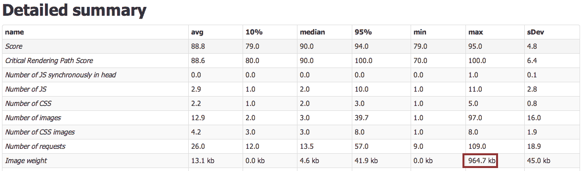
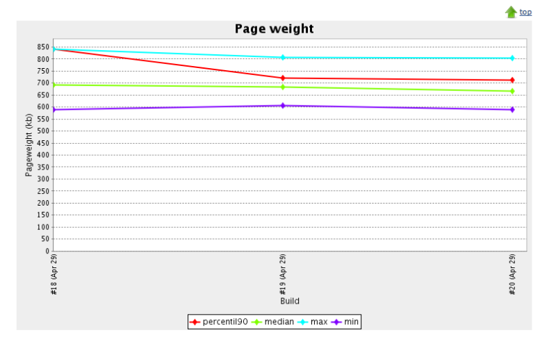
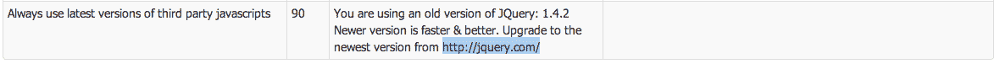
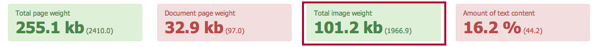

The summary page is now based on the summary.xml file. The XML file keeps information of all fields you see on the summary page for all the pages that has been tested. For all the metrics you will get the average, median, max, min, standard deviation, variance, 10 percentile, 90 percentile & the 95 percentile! Yes that is a lot of difference statistics and it is quite cool!
How do you actually make use of it? Well for example, you can easily see which is the largest image of your site, check this out (data collected from a big video site): You will find the link to the detailed summary on the start page of the result pages. When the new design is added, it will be in the navigation
You can also use the summary.xml file with Jenkins. You can use the Plot plugin and create graphs between your test runs, keep track of what's happening with your site in your development cycle.
There are also some new metrics: The total per page and individual size of js/css and images. You can check out an example of the summary.xml file.
The report dir name & structure has been changed, to make it easier to compare runs in the future. The old structure was sitespeed-HOST-DATE, now it is HOST/DATE.
There is a new rule in town that checks if the latest version is used of a Javascript plugin. Right now the only check is for the latest JQuery version, in the future other plugins will be checked.
On the summary page, you can now see the total image size per page (median & 90 percentile values of course).
A few changes to make things easier: By default, the JUnit xml file is now named sitespeed.io-junit.xml. You need to configure the output directory (see the docs) and the script will also put a copy of the summary.xml in the same dir.
See the changelog for changes done in the past.
{kind=link}
{kind=link}
{kind=link}
{kind=link}